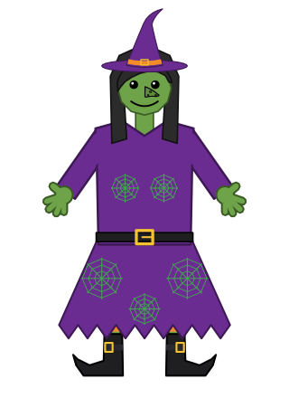

Hazel reports · ^report(46) · the Witch's picture · one page per output · updated 2026-11-07 13:29 MST
The Witch's picture view: hazel-jit's output
One of six pages, one per version of the Witch slide's ^picture view (^report(46), a view): Hazel · hazel-jit's output · ReScript 12.3.1's output · Melange 5.0.0's output · js_of_ocaml 5.9.1's output · JavaScript by hand.
What hazel-jit wrote for the module, as the app compiles it once per definition (in 6.1 ms). Look for coords$: each number goes through $R.b.to_fixed([x, 1]), a builtin that takes its arguments as one array and clamps the digits; each list is walked by a recursive call, grow_all and bounds included, where the other compilers loop; each case becomes a chain of conditional expressions with a $R.nomatch at its end.

hazel-jit's JavaScript for the livelit's module, formatted by esbuild (its runtime is $R)
function compiled($R) { "use strict"; const g$new_splice = (() => { return (() => { let self$3; return self$3 = $R.fn((a$4) => { let args$5; return args$5 = a$4, { c: "NewSplice", v: [args$5, $R.fn((a$6) => { let x$7; return x$7 = a$6, { c: "Pure", v: x$7 }; }, 0, null)] }; }, 1, null), self$3; })(); })(); const g$update_bind = (() => { return $R.fn((a$10) => { let ck$11; return ck$11 = a$10, { c: "Bind", v: ck$11 }; }, 3, null); })(); const g$eval_splice = (() => { return (() => { let self$126; return self$126 = $R.fn((a$127) => { let args$128; return args$128 = a$127, { c: "EvalSplice", v: [args$128, $R.fn((a$129) => { let x$130; return x$130 = a$129, { c: "Pure", v: x$130 }; }, 16, null)] }; }, 17, null), self$126; })(); })(); const g$view_bind = (() => { return $R.fn((a$135) => { let ck$136; return ck$136 = a$135, { c: "Bind", v: ck$136 }; }, 19, null); })(); let let$1, P$144; return let$1 = (() => { let def$2, init$12, def$13, update$18, def$19, num$22, def$23, coords$33, def$34, shape_node$40, def$41, shape_nodes$48, def$49, vertices_of$55, def$56, grow$66, def$67, grow_all$75, def$76, bounds$84, def$85, framing$94, def$95, view_box$122, def$123, view$137, def$138, expand$141, def$142, shape$143; return def$2 = g$update_bind([g$new_splice([{ c: "AnyT" }, { c: "None" }]), $R.fn((a$8) => { let p$9; return p$9 = a$8, { c: "Pure", v: $R.tup([p$9], ["picture"]) }; }, 2, null)]), init$12 = def$2, def$13 = $R.fn((a$14) => { let m$15; return m$15 = a$14, $R.fn((a$16) => { let _a$17; return _a$17 = a$16, { c: "Pure", v: m$15 }; }, 4, [m$15]); }, 5, null), update$18 = def$13, def$19 = $R.fn((a$20) => { let x$21; return x$21 = a$20, $R.b.to_fixed([x$21, 1]); }, 6, null), num$22 = def$19, def$23 = (() => { let coords$24; return coords$24 = $R.fn((a$25) => { let vs$26, m$27, v$28, tl$29, let$30, x$31, y$32; return vs$26 = a$25, m$27 = vs$26, m$27 === null ? "" : m$27 !== null ? (v$28 = m$27.h, tl$29 = m$27.t, let$30 = v$28["at"], x$31 = let$30[0], y$32 = let$30[1], $R.b.to_fixed([x$31, 1]) + ("," + ($R.b.to_fixed([y$32, 1]) + (" " + coords$24(tl$29))))) : $R.nomatch("case"); }, 7, [coords$24]), coords$24; })(), coords$33 = def$23, def$34 = $R.fn((a$35) => { let s$36, m$37, p$38, p$39; return s$36 = a$35, m$37 = s$36, m$37.c === "Polygon" ? (p$39 = m$37.v, { c: "Node", v: ["polygon", { h: { c: "Create", v: ["points", coords$33(p$39["points"])] }, t: { h: { c: "Create", v: ["fill", p$39["fill"]] }, t: { h: { c: "Create", v: ["stroke", p$39["stroke"]["color"]] }, t: { h: { c: "Create", v: ["stroke-width", num$22(p$39["stroke"]["width"])] }, t: { h: { c: "Create", v: ["stroke-linejoin", "round"] }, t: null } } } } }, null] }) : m$37.c === "Path" ? (p$38 = m$37.v, { c: "Node", v: ["polyline", { h: { c: "Create", v: ["points", coords$33(p$38["points"])] }, t: { h: { c: "Create", v: ["fill", "none"] }, t: { h: { c: "Create", v: ["stroke", p$38["stroke"]["color"]] }, t: { h: { c: "Create", v: ["stroke-width", num$22(p$38["stroke"]["width"])] }, t: { h: { c: "Create", v: ["stroke-linejoin", "round"] }, t: { h: { c: "Create", v: ["stroke-linecap", "round"] }, t: null } } } } } }, null] }) : $R.nomatch("case"); }, 8, [num$22, coords$33]), shape_node$40 = def$34, def$41 = (() => { let shape_nodes$42; return shape_nodes$42 = $R.fn((a$43) => { let ss$44, m$45, s$46, tl$47; return ss$44 = a$43, m$45 = ss$44, m$45 === null ? null : m$45 !== null ? (s$46 = m$45.h, tl$47 = m$45.t, { h: shape_node$40(s$46), t: shape_nodes$42(tl$47) }) : $R.nomatch("case"); }, 9, [shape_nodes$42, shape_node$40]), shape_nodes$42; })(), shape_nodes$48 = def$41, def$49 = $R.fn((a$50) => { let s$51, m$52, p$53, p$54; return s$51 = a$50, m$52 = s$51, m$52.c === "Polygon" ? (p$54 = m$52.v, p$54["points"]) : m$52.c === "Path" ? (p$53 = m$52.v, p$53["points"]) : $R.nomatch("case"); }, 10, null), vertices_of$55 = def$49, def$56 = $R.fn((a$57) => { let x0$58, y0$59, x1$60, y1$61, v$62, let$63, x$64, y$65; return x0$58 = a$57[0][0], y0$59 = a$57[0][1], x1$60 = a$57[0][2], y1$61 = a$57[0][3], v$62 = a$57[1], let$63 = v$62["at"], x$64 = let$63[0], y$65 = let$63[1], [x$64 - 12 < x0$58 ? x$64 - 12 : x0$58, y$65 - 12 < y0$59 ? y$65 - 12 : y0$59, x$64 + 12 > x1$60 ? x$64 + 12 : x1$60, y$65 + 12 > y1$61 ? y$65 + 12 : y1$61]; }, 11, null), grow$66 = def$56, def$67 = (() => { let grow_all$68; return grow_all$68 = $R.fn((a$69) => { let b$70, vs$71, m$72, v$73, tl$74; return b$70 = a$69[0], vs$71 = a$69[1], m$72 = vs$71, m$72 === null ? b$70 : m$72 !== null ? (v$73 = m$72.h, tl$74 = m$72.t, grow_all$68([grow$66([b$70, v$73]), tl$74])) : $R.nomatch("case"); }, 12, [grow$66, grow_all$68]), grow_all$68; })(), grow_all$75 = def$67, def$76 = (() => { let bounds$77; return bounds$77 = $R.fn((a$78) => { let b$79, ss$80, m$81, s$82, tl$83; return b$79 = a$78[0], ss$80 = a$78[1], m$81 = ss$80, m$81 === null ? b$79 : m$81 !== null ? (s$82 = m$81.h, tl$83 = m$81.t, bounds$77([grow_all$75([b$79, vertices_of$55(s$82)]), tl$83])) : $R.nomatch("case"); }, 13, [vertices_of$55, grow_all$75, bounds$77]), bounds$77; })(), bounds$84 = def$76, def$85 = (() => { let framing$86; return framing$86 = $R.fn((a$87) => { let ss$88, m$89, s$90, tl$91, m$92, p$93; return ss$88 = a$87, m$89 = ss$88, m$89 === null ? null : m$89 !== null ? (s$90 = m$89.h, tl$91 = m$89.t, m$92 = s$90, m$92.c === "Path" ? (p$93 = m$92.v, $R.eq(p$93["name"], "frame") ? { h: s$90, t: null } : framing$86(tl$91)) : framing$86(tl$91)) : $R.nomatch("case"); }, 14, [framing$86]), framing$86; })(), framing$94 = def$85, def$95 = $R.fn((a$96) => { let pic$97, let$98, m$99, f$100, boxed$101, let$102, m$103, s$104, m$105, v$106, let$107, x$108, y$109, start$110, let$111, x0$112, y0$113, x1$114, y1$115, let$116, w$117, h$118, let$119, w2$120, h2$121; return pic$97 = a$96, let$98 = (m$99 = framing$94(pic$97), m$99 === null ? pic$97 : (f$100 = m$99, f$100)), boxed$101 = let$98, let$102 = (m$103 = boxed$101, m$103 === null ? [0, 0, 0, 0] : m$103 !== null ? (s$104 = m$103.h, m$105 = vertices_of$55(s$104), m$105 === null ? [0, 0, 0, 0] : m$105 !== null ? (v$106 = m$105.h, let$107 = v$106["at"], x$108 = let$107[0], y$109 = let$107[1], [x$108, y$109, x$108, y$109]) : $R.nomatch("case")) : $R.nomatch("case")), start$110 = let$102, let$111 = bounds$84([start$110, boxed$101]), x0$112 = let$111[0], y0$113 = let$111[1], x1$114 = let$111[2], y1$115 = let$111[3], let$116 = [x1$114 - x0$112, y1$115 - y0$113], w$117 = let$116[0], h$118 = let$116[1], let$119 = w$117 * 440 > h$118 * 320 ? [w$117, w$117 * 440 / 320] : [h$118 * 320 / 440, h$118], w2$120 = let$119[0], h2$121 = let$119[1], num$22(x0$112 - (w2$120 - w$117) / 2) + (" " + (num$22(y0$113 - (h2$121 - h$118) / 2) + (" " + (num$22(w2$120) + (" " + num$22(h2$121)))))); }, 15, [framing$94, vertices_of$55, bounds$84, num$22]), view_box$122 = def$95, def$123 = $R.fn((a$124) => { let m$125; return m$125 = a$124, g$view_bind([g$eval_splice(m$125["picture"]), $R.fn((a$131) => { let r$132, m$133, pic$134; return r$132 = a$131, { c: "Pure", v: (m$133 = r$132, m$133.c === "Some" && m$133.v.c === "Val" ? (pic$134 = m$133.v.v, { c: "Node", v: ["svg", { h: { c: "Create", v: ["viewBox", view_box$122(pic$134)] }, t: { h: { c: "Width", v: "320" }, t: { h: { c: "Height", v: "440" }, t: { h: { c: "Style", v: { h: ["border", "1px solid #ccc"], t: { h: ["background", "#fafafa"], t: null } } }, t: null } } } }, shape_nodes$48(pic$134)] }) : { c: "Div", v: [{ h: { c: "Style", v: { h: ["font-family", "var(--code-font)"], t: { h: ["font-size", "0.8em"], t: null } } }, t: null }, { h: { c: "Text", v: "no picture yet" }, t: null }] }) }; }, 18, [view_box$122, shape_nodes$48])]); }, 20, [view_box$122, shape_nodes$48]), view$137 = def$123, def$138 = $R.missing("a quotation or a splice"), expand$141 = def$138, def$142 = { c: "Block", v: [34, 22] }, shape$143 = def$142, $R.tup([init$12, update$18, num$22, coords$33, shape_node$40, shape_nodes$48, vertices_of$55, grow$66, grow_all$75, bounds$84, framing$94, view_box$122, view$137, expand$141, shape$143], ["init", "update", "num", "coords", "shape_node", "shape_nodes", "vertices_of", "grow", "grow_all", "bounds", "framing", "view_box", "view", "expand", "shape"]); })(), P$144 = let$1, P$144; }
The files, in 046/data/witch (sources, outputs, the benchmark, the timings): Witch.res, Witch.res.js, bench-runs.jsonl, firefox.json, hazeljit-runtime-src.js, hazeljit-witch-pretty.js, hazeljit-witch-src.js, jsoo-excerpt.js, jsoo-runs.jsonl, picture.hz, picture.json, raw-run1.json, raw-run2.json, timings.json, witch-bench.mjs, witch-core.ml, witch-jsoo-tofixed.ml, witch-jsoo.ml, witch-melange.js, witch-melange.ml.